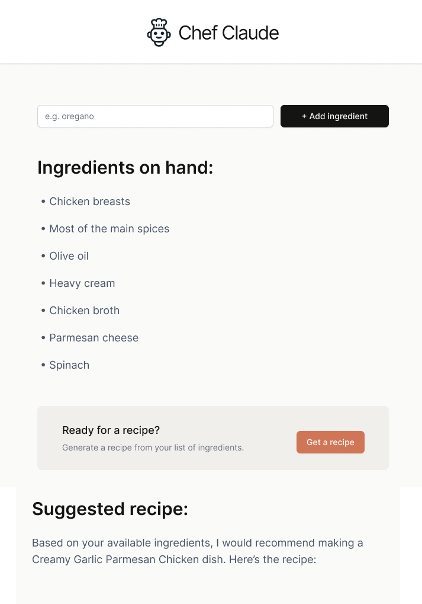

React, Claude AI
Chef Claude is a web application that helps users discover recipes by simply entering the ingredients they have on hand. The app uses Claude AI to suggest personalized recipes, offering a practical and creative way to make the most of what’s in your kitchen.
The app is built with React and incorporates essential features such as ReactMarkdown, components, and props for reusable and modular code. It leverages JavaScript techniques including map(), onclick functions, fragments, destructuring, async functions, and conditional rendering to enhance the app’s interactivity and user experience. Additionally, useState() is used for efficient state management and UI updates.
Chef Claude App was created as part of Scrimba's Frontend Developer Career Path program, with the design provided through a Figma file, andd an API key created through Anthropic for the AI-powered recipe suggestions.